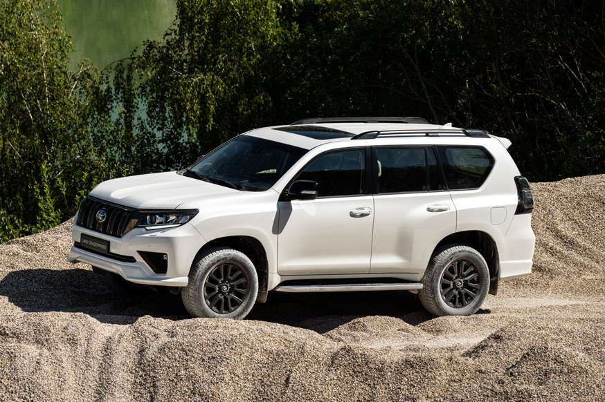
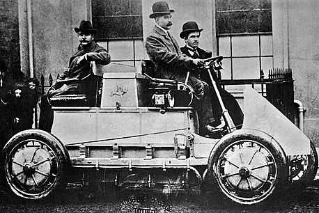
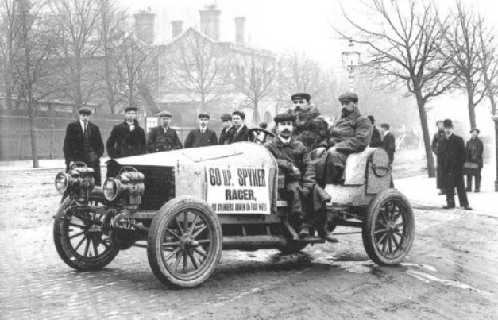
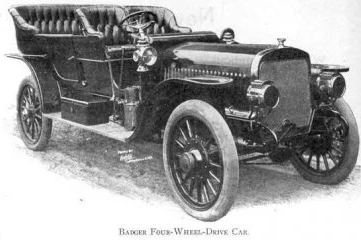
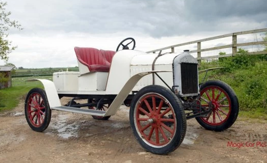
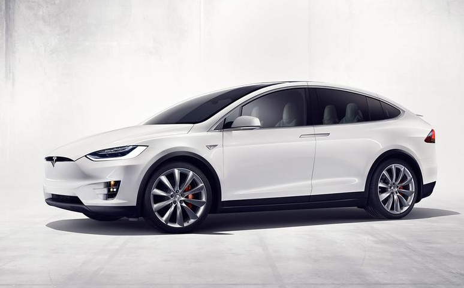

Внедорожник
Формально по типу кузова такие машины нужно относить к универсалам
Но в повседневном пользовании между этими машинами есть заметные отличия.
Пол кузова у внедорожников расположен высоко над дорогой, что делает его удобнее для посадки.
Притом пол багажника часто еще выше, поскольку под ним у многих кроссоверов размещается привод заднего моста и массивная запаска
Это автомобиль, обладающий повышенной проходимостью по бездорожью за счёт высокого клиренса, ведущих передних и задних колёс.
История
История полноприводных(внедорожники) автомобилей началась в 1900 году.
А именно с Lohner-Porsche
Lohner-Porsche (1900 год)
Первым полноприводным автомобилем возможно в те времена был Lohner-Porsche,
который как известно спроектировал Фердинанд Порше. Вместо использования
двигателя внутреннего сгорания с воздушным охлаждением (этот мотор сделал автомобили Porsche известными на весь мир)
Порше использовал в машине четыре электромотора, каждый из которых по отдельности был установлен на колеса.
Spyker 60 HP (1903 год)
Голландская компания Spyker в 1903 году разработала свой 60-ти сильный полноприводный гоночный автомобиль,
который в то время оснащался 8,7-литровым прямым шестирядным двигателем.
Эта машина участвовала в Европейских гонках 1903 года. Примечательно, что Spyker
участвовал в гонках не с самого начала чемпионата, так как
автомобиль не удалось подготовить к началу старта соревнований.
Сегодня Spyker 60 HP находится в одном из музеев Голландии.
Этот автомобиль вошел в историю автомобилестроения тем,
что впервые в мире на нем был использован полный привод и стоял шестицилиндровый мотор.
Four-Wheel Drive Auto Company "Battleship" (1909 год)
В 1908 году компания Four-Wheel Drive Auto Company тоже начала производить
полноприводные автомобили, хотя большинство производимых транспортных средств в те годы
выпускались только с задним приводом. Их первый полноприводный автомобиль
получил свое название, то есть имя,- "Battleship" ("Броненосец").
Почему такое имя. Возможно это связано с тем, что "Battleship"
в отличие от заднеприводных машин мог спокойно передвигаться по пересеченной местности,
где большинство производимых в то время автомобилей просто-напросто застревали.
Ford Model T Speedster (1915 год)
В 1910-х годах автомобили с четырьмя ведущими колесами были не так многочисленны.
Причем большинство полноприводных машин были очень дорогими.
В 1915 году американский инженер создал свой комплект доработки,- Ford Model T,
который превращал легендарные автомобили полностью в полноприводные.
Комплект доработки включал в себя следующую комплектацию, именно переднюю ось, раздаточную коробку, приводной вал и передние пружины.
Комплект такой конструкции оказался вполне надежным, в результате чего компания Форд попыталась выкупить у этого инженера права на данную технологию . Но автор полного привода отказался от такого заманчивого предложения.
Настоящее время
Я могу ещё много говорить про древные полноприводные автомобили, но сейчас хотелось бы
перейти к новым полноприводным электрокарам.
Tesla Model X (2016 год)
Tesla Model X - первый в мире серийный электрический семиместный кроссовер.
Модель создана и основана на базе седана Model S. Tesla Model X
оснащена уникальными по своей конструкции дверьми, которые носят название- "крылья чайки".
Удивительно, этот кроссовер почти сразу же стали считать прямым конкурентом
таким компаниям, как Audi, Jaguar и Mercedes-Benz.